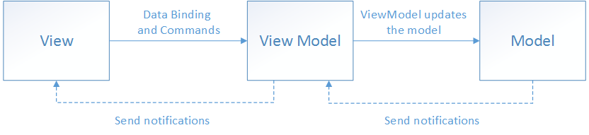

The original, as published: Microsoft Learn, Model-View-ViewModel (MVVM). CC BY 4.0, https://creativecommons.org/licenses/by/4.0/. Imported as published, from https://learn.microsoft.com/en-us/dotnet/architecture/maui/mvvm https://learn.microsoft.com/en-us/dotnet/architecture/maui/mvvm
Note
Access to this page requires authorization. You can try signing in or changing directories.
Access to this page requires authorization. You can try changing directories.
Tip
This content is an excerpt from the eBook, Enterprise Application Patterns Using .NET MAUI, available on .NET Docs or as a free downloadable PDF that can be read offline.
The .NET MAUI developer experience typically involves creating a user interface in XAML, and then adding code-behind that operates on the user interface. Complex maintenance issues can arise as apps are modified and grow in size and scope. These issues include the tight coupling between the UI controls and the business logic, which increases the cost of making UI modifications, and the difficulty of unit testing such code.
The MVVM pattern helps cleanly separate an application's business and presentation logic from its user interface (UI). Maintaining a clean separation between application logic and the UI helps address numerous development issues and makes an application easier to test, maintain, and evolve. It can also significantly improve code re-use opportunities and allows developers and UI designers to collaborate more easily when developing their respective parts of an app.
There are three core components in the MVVM pattern: the model, the view, and the view model. Each serves a distinct purpose. The diagram below shows the relationships between the three components.

In addition to understanding the responsibilities of each component, it's also important to understand how they interact. At a high level, the view "knows about" the view model, and the view model "knows about" the model, but the model is unaware of the view model, and the view model is unaware of the view. Therefore, the view model isolates the view from the model, and allows the model to evolve independently of the view.
The benefits of using the MVVM pattern are as follows:
The key to using MVVM effectively lies in understanding how to factor app code into the correct classes and how the classes interact. The following sections discuss the responsibilities of each of the classes in the MVVM pattern.
The view is responsible for defining the structure, layout, and appearance of what the user sees on screen. Ideally, each view is defined in XAML, with a limited code-behind that does not contain business logic. However, in some cases, the code-behind might contain UI logic that implements visual behavior that is difficult to express in XAML, such as animations.
In a .NET MAUI application, a view is typically a ContentPage-derived or ContentView-derived class. However, views can also be represented by a data template, which specifies the UI elements to be used to visually represent an object when it's displayed. A data template as a view does not have any code-behind, and is designed to bind to a specific view model type.
Tip
Avoid enabling and disabling UI elements in the code-behind.
Ensure that the view models are responsible for defining logical state changes that affect some aspects of the view's display, such as whether a command is available, or an indication that an operation is pending. Therefore, enable and disable UI elements by binding to view model properties, rather than enabling and disabling them in code-behind.
There are several options for executing code on the view model in response to interactions on the view, such as a button click or item selection. If a control supports commands, the control's Command property can be data-bound to an ICommand property on the view model. When the control's command is invoked, the code in the view model will be executed. In addition to commands, behaviors can be attached to an object in the view and can listen for either a command to be invoked or the event to be raised. In response, the behavior can then invoke an ICommand on the view model or a method on the view model.
The view model implements properties and commands to which the view can data bind to, and notifies the view of any state changes through change notification events. The properties and commands that the view model provides define the functionality to be offered by the UI, but the view determines how that functionality is to be displayed.
Tip
Keep the UI responsive with asynchronous operations.
Multi-platform apps should keep the UI thread unblocked to improve the user's perception of performance. Therefore, in the view model, use asynchronous methods for I/O operations and raise events to asynchronously notify views of property changes.
The view model is also responsible for coordinating the view's interactions with any model classes that are required. There's typically a one-to-many relationship between the view model and the model classes. The view model might choose to expose model classes directly to the view so that controls in the view can data bind directly to them. In this case, the model classes will need to be designed to support data binding and change notification events.
Each view model provides data from a model in a form that the view can easily consume. To accomplish this, the view model sometimes performs data conversion. Placing this data conversion in the view model is a good idea because it provides properties that the view can bind to. For example, the view model might combine the values of two properties to make it easier to display by the view.
Tip
Centralize data conversions in a conversion layer.
It's also possible to use converters as a separate data conversion layer that sits between the view model and the view. This can be necessary, for example, when data requires special formatting that the view model doesn't provide.
In order for the view model to participate in two-way data binding with the view, its properties must raise the PropertyChanged event. View models satisfy this requirement by implementing the INotifyPropertyChanged interface, and raising the PropertyChanged event when a property is changed.
For collections, the view-friendly ObservableCollection<T> is provided. This collection implements collection changed notification, relieving the developer from having to implement the INotifyCollectionChanged interface on collections.
Model classes are non-visual classes that encapsulate the app's data. Therefore, the model can be thought of as representing the app's domain model, which usually includes a data model along with business and validation logic. Examples of model objects include data transfer objects (DTOs), Plain Old CLR Objects (POCOs), and generated entity and proxy objects.
Model classes are typically used in conjunction with services or repositories that encapsulate data access and caching.
View models can be connected to views by using the data-binding capabilities of .NET MAUI. There are many approaches that can be used to construct views and view models and associate them at runtime. These approaches fall into two categories, known as view first composition, and view model first composition. Choosing between view first composition and view model first composition is an issue of preference and complexity. However, all approaches share the same aim, which is for the view to have a view model assigned to its BindingContext property.
With view first composition the app is conceptually composed of views that connect to the view models they depend on. The primary benefit of this approach is that it makes it easy to construct loosely coupled, unit testable apps because the view models have no dependence on the views themselves. It's also easy to understand the structure of the app by following its visual structure, rather than having to track code execution to understand how classes are created and associated. In addition, view first construction aligns with the Microsoft Maui's navigation system that's responsible for constructing pages when navigation occurs, which makes a view model first composition complex and misaligned with the platform.
With view model first composition, the app is conceptually composed of view models, with a service responsible for locating the view for a view model. View model first composition feels more natural to some developers, since the view creation can be abstracted away, allowing them to focus on the logical non-UI structure of the app. In addition, it allows view models to be created by other view models. However, this approach is often complex, and it can become difficult to understand how the various parts of the app are created and associated.
Tip
Keep view models and views independent.
The binding of views to a property in a data source should be the view's principal dependency on its corresponding view model. Specifically, don't reference view types, such as Button and ListView, from view models. By following the principles outlined here, view models can be tested in isolation, therefore reducing the likelihood of software defects by limiting scope.
The following sections discuss the main approaches to connecting view models to views.
The simplest approach is for the view to declaratively instantiate its corresponding view model in XAML. When the view is constructed, the corresponding view model object will also be constructed. This approach is demonstrated in the following code example:
<ContentPage xmlns:local="clr-namespace:eShop">
<ContentPage.BindingContext>
<local:LoginViewModel />
</ContentPage.BindingContext>
<!-- Omitted for brevity... -->
</ContentPage>
When the ContentPage is created, an instance of the LoginViewModel is automatically constructed and set as the view's BindingContext.
This declarative construction and assignment of the view model by the view has the advantage that it's simple, but has the disadvantage that it requires a default (parameter-less) constructor in the view model.
A view can have code in the code-behind file, resulting in the view-model being assigned to its BindingContext property. This is often accomplished in the view's constructor, as shown in the following code example:
public LoginView()
{
InitializeComponent();
BindingContext = new LoginViewModel(navigationService);
}
The programmatic construction and assignment of the view model within the view's code-behind has the advantage that it's simple. However, the main disadvantage of this approach is that the view needs to provide the view model with any required dependencies. Using a dependency injection container can help to maintain loose coupling between the view and view model. For more information, see Dependency injection.
All view model and model classes that are accessible to a view should implement the INotifyPropertyChanged interface. Implementing this interface in a view model or model class allows the class to provide change notifications to any data-bound controls in the view when the underlying property value changes.
App's should be architected for the correct use of property change notification, by meeting the following requirements:
PropertyChanged event if a public property's value changes. Do not assume that raising the PropertyChanged event can be ignored because of knowledge of how XAML binding occurs.PropertyChanged event for any calculated properties whose values are used by other properties in the view model or model.PropertyChanged event at the end of the method that makes a property change, or when the object is known to be in a safe state. Raising the event interrupts the operation by invoking the event's handlers synchronously. If this happens in the middle of an operation, it might expose the object to callback functions when it is in an unsafe, partially updated state. In addition, it's possible for cascading changes to be triggered by PropertyChanged events. Cascading changes generally require updates to be complete before the cascading change is safe to execute.PropertyChanged event if the property does not change. This means that you must compare the old and new values before raising the PropertyChanged event.PropertyChanged event during a view model's constructor if you are initializing a property. Data-bound controls in the view will not have subscribed to receive change notifications at this point.PropertyChanged event with the same property name argument within a single synchronous invocation of a public method of a class. For example, given a NumberOfItems property whose backing store is the _numberOfItems field, if a method increments _numberOfItems fifty times during the execution of a loop, it should only raise property change notification on the NumberOfItems property once, after all the work is complete. For asynchronous methods, raise the PropertyChanged event for a given property name in each synchronous segment of an asynchronous continuation chain.A simple way to provide this functionality would be to create an extension of the BindableObject class. In this example, the ExtendedBindableObject class provides change notifications, which is shown in the following code example:
public abstract class ExtendedBindableObject : BindableObject
{
public void RaisePropertyChanged<T>(Expression<Func<T>> property)
{
var name = GetMemberInfo(property).Name;
OnPropertyChanged(name);
}
private MemberInfo GetMemberInfo(Expression expression)
{
// Omitted for brevity ...
}
}
.NET MAUI's BindableObject class implements the INotifyPropertyChanged interface, and provides an OnPropertyChanged method. The ExtendedBindableObject class provides the RaisePropertyChanged method to invoke property change notification, and in doing so uses the functionality provided by the BindableObject class.
View model classes can then derive from the ExtendedBindableObject class. Therefore, each view model class uses the RaisePropertyChanged method in the ExtendedBindableObject class to provide property change notification. The following code example shows how the eShop multi-platform app invokes property change notification by using a lambda expression:
public bool IsLogin
{
get => _isLogin;
set
{
_isLogin = value;
RaisePropertyChanged(() => IsLogin);
}
}
Using a lambda expression in this way involves a small performance cost because the lambda expression has to be evaluated for each call. Although the performance cost is small and would not typically impact an app, the costs can accrue when there are many change notifications. However, the benefit of this approach is that it provides compile-time type safety and refactoring support when renaming properties.
The MVVM pattern is well established in .NET, and the community has created many frameworks which help ease this development. Each framework provides a different set of features, but it is standard for them to provide a common view model with an implementation of the INotifyPropertyChanged interface. Additional features of MVVM frameworks include custom commands, navigation helpers, dependency injection/service locator components, and UI platform integration. While it is not necessary to use these frameworks, they can speed up and standardize your development. The eShop multi-platform app uses the .NET Community MVVM Toolkit. When choosing a framework, you should consider your application's needs and your team's strengths. The list below includes some of the more common MVVM frameworks for .NET MAUI.
In multi-platform apps, actions are typically invoked in response to a user action, such as a button click, that can be implemented by creating an event handler in the code-behind file. However, in the MVVM pattern, the responsibility for implementing the action lies with the view model, and placing code in the code-behind should be avoided.
Commands provide a convenient way to represent actions that can be bound to controls in the UI. They encapsulate the code that implements the action and help to keep it decoupled from its visual representation in the view. This way, your view models become more portable to new platforms, as they do not have a direct dependency on events provided by the platform's UI framework. .NET MAUI includes controls that can be declaratively connected to a command, and these controls will invoke the command when the user interacts with the control.
Behaviors also allow controls to be declaratively connected to a command. However, behaviors can be used to invoke an action that's associated with a range of events raised by a control. Therefore, behaviors address many of the same scenarios as command-enabled controls, while providing a greater degree of flexibility and control. In addition, behaviors can also be used to associate command objects or methods with controls that were not specifically designed to interact with commands.
View models typically expose public properties, for binding from the view, which implement the ICommand interface. Many .NET MAUI controls and gestures provide a Command property, which can be data bound to an ICommand object provided by the view model. The button control is one of the most commonly used controls, providing a command property that executes when the button is clicked.
Note
While it's possible to expose the actual implementation of the ICommand interface that your view model uses (for example, Command<T> or RelayCommand), it is recommended to expose your commands publicly as ICommand. This way, if you ever need to change the implementation at a later date, it can easily be swapped out.
The ICommand interface defines an Execute method, which encapsulates the operation itself, a CanExecute method, which indicates whether the command can be invoked, and a CanExecuteChanged event that occurs when changes occur that affect whether the command should execute. In most cases, we will only supply the Execute method for our commands. For a more detailed overview of ICommand, refer to the Commanding documentation for .NET MAUI.
Provided with .NET MAUI are the Command and Command<T> classes that implement the ICommand interface, where T is the type of the arguments to Execute and CanExecute. Command and Command<T> are basic implementations that provide the minimal set of functionality needed for the ICommand interface.
Note
Many MVVM frameworks offer more feature rich implementations of the ICommand interface.
The Command or Command<T> constructor requires an Action callback object that's called when the ICommand.Execute method is invoked. The CanExecute method is an optional constructor parameter, and is a Func that returns a bool.
The eShop multi-platform app uses the RelayCommand and AsyncRelayCommand. The primary benefit for modern applications is that the AsyncRelayCommand provides better functionality for asynchronous operations.
The following code shows how a Command instance, which represents a register command, is constructed by specifying a delegate to the Register view model method:
public ICommand RegisterCommand { get; }
The command is exposed to the view through a property that returns a reference to an ICommand. When the Execute method is called on the Command object, it simply forwards the call to the method in the view model via the delegate that was specified in the Command constructor. An asynchronous method can be invoked by a command by using the async and await keywords when specifying the command's Execute delegate. This indicates that the callback is a Task and should be awaited. For example, the following code shows how an ICommand instance, which represents a sign-in command, is constructed by specifying a delegate to the SignInAsync view model method:
public ICommand SignInCommand { get; }
...
SignInCommand = new AsyncRelayCommand(async () => await SignInAsync());
Parameters can be passed to the Execute and CanExecute actions by using the AsyncRelayCommand<T> class to instantiate the command. For example, the following code shows how an AsyncRelayCommand<T> instance is used to indicate that the NavigateAsync method will require an argument of type string:
public ICommand NavigateCommand { get; }
...
NavigateCommand = new AsyncRelayCommand<string>(NavigateAsync);
In both the RelayCommand and RelayCommand<T> classes, the delegate to the CanExecute method in each constructor is optional. If a delegate isn't specified, the Command will return true for CanExecute. However, the view model can indicate a change in the command's CanExecute status by calling the ChangeCanExecute method on the Command object. This causes the CanExecuteChanged event to be raised. Any UI controls bound to the command will then update their enabled status to reflect the availability of the data-bound command.
The following code example shows how a Grid in the LoginView binds to the RegisterCommand in the LoginViewModel class by using a TapGestureRecognizer instance:
<Grid Grid.Column="1" HorizontalOptions="Center">
<Label Text="REGISTER" TextColor="Gray"/>
<Grid.GestureRecognizers>
<TapGestureRecognizer Command="{Binding RegisterCommand}" NumberOfTapsRequired="1" />
</Grid.GestureRecognizers>
</Grid>
A command parameter can also be optionally defined using the CommandParameter property. The type of the expected argument is specified in the Execute and CanExecute target methods. The TapGestureRecognizer will automatically invoke the target command when the user interacts with the attached control. The CommandParameter, if provided, will be passed as the argument to the command's Execute delegate.
Behaviors allow functionality to be added to UI controls without having to subclass them. Instead, the functionality is implemented in a behavior class and attached to the control as if it was part of the control itself. Behaviors enable you to implement code that you would typically have to write as code-behind, because it directly interacts with the API of the control, in such a way that it can be concisely attached to the control, and packaged for reuse across more than one view or app. In the context of MVVM, behaviors are a useful approach for connecting controls to commands.
A behavior that's attached to a control through attached properties is known as an attached behavior. The behavior can then use the exposed API of the element to which it is attached to add functionality to that control, or other controls, in the visual tree of the view.
A .NET MAUI behavior is a class that derives from the Behavior or Behavior<T> class, where T is the type of the control to which the behavior should apply. These classes provide OnAttachedTo and OnDetachingFrom methods, which should be overridden to provide logic that will be executed when the behavior is attached to and detached from controls.
In the eShop multi-platform app, the BindableBehavior<T> class derives from the Behavior<T> class. The purpose of the BindableBehavior<T> class is to provide a base class for .NET MAUI behaviors that require the BindingContext of the behavior to be set to the attached control.
The BindableBehavior<T> class provides an overridable OnAttachedTo method that sets the BindingContext of the behavior, and an overridable OnDetachingFrom method that cleans up the BindingContext.
The eShop multi-platform app includes an EventToCommandBehavior class which is provided by the MAUI Community toolkit. EventToCommandBehavior executes a command in response to an event occurring. This class derives from the BaseBehavior<View> class so that the behavior can bind to and execute an ICommand specified by a Command property when the behavior is consumed. The following code example shows the EventToCommandBehavior class:
/// <summary>
/// The <see cref="EventToCommandBehavior"/> is a behavior that allows the user to invoke a <see cref="ICommand"/> through an event. It is designed to associate Commands to events exposed by controls that were not designed to support Commands. It allows you to map any arbitrary event on a control to a Command.
/// </summary>
public class EventToCommandBehavior : BaseBehavior<VisualElement>
{
// Omitted for brevity...
/// <inheritdoc/>
protected override void OnAttachedTo(VisualElement bindable)
{
base.OnAttachedTo(bindable);
RegisterEvent();
}
/// <inheritdoc/>
protected override void OnDetachingFrom(VisualElement bindable)
{
UnregisterEvent();
base.OnDetachingFrom(bindable);
}
static void OnEventNamePropertyChanged(BindableObject bindable, object oldValue, object newValue)
=> ((EventToCommandBehavior)bindable).RegisterEvent();
void RegisterEvent()
{
UnregisterEvent();
var eventName = EventName;
if (View is null || string.IsNullOrWhiteSpace(eventName))
{
return;
}
eventInfo = View.GetType()?.GetRuntimeEvent(eventName) ??
throw new ArgumentException($"{nameof(EventToCommandBehavior)}: Couldn't resolve the event.", nameof(EventName));
ArgumentNullException.ThrowIfNull(eventInfo.EventHandlerType);
ArgumentNullException.ThrowIfNull(eventHandlerMethodInfo);
eventHandler = eventHandlerMethodInfo.CreateDelegate(eventInfo.EventHandlerType, this) ??
throw new ArgumentException($"{nameof(EventToCommandBehavior)}: Couldn't create event handler.", nameof(EventName));
eventInfo.AddEventHandler(View, eventHandler);
}
void UnregisterEvent()
{
if (eventInfo is not null && eventHandler is not null)
{
eventInfo.RemoveEventHandler(View, eventHandler);
}
eventInfo = null;
eventHandler = null;
}
/// <summary>
/// Virtual method that executes when a Command is invoked
/// </summary>
/// <param name="sender"></param>
/// <param name="eventArgs"></param>
[Microsoft.Maui.Controls.Internals.Preserve(Conditional = true)]
protected virtual void OnTriggerHandled(object? sender = null, object? eventArgs = null)
{
var parameter = CommandParameter
?? EventArgsConverter?.Convert(eventArgs, typeof(object), null, null);
var command = Command;
if (command?.CanExecute(parameter) ?? false)
{
command.Execute(parameter);
}
}
}
The OnAttachedTo and OnDetachingFrom methods are used to register and deregister an event handler for the event defined in the EventName property. Then, when the event fires, the OnTriggerHandled method is invoked, which executes the command.
The advantage of using the EventToCommandBehavior to execute a command when an event fires, is that commands can be associated with controls that weren't designed to interact with commands. In addition, this moves event-handling code to view models, where it can be unit tested.
The EventToCommandBehavior is particularly useful for attaching a command to a control that doesn't support commands. For example, the LoginView uses the EventToCommandBehavior to execute the ValidateCommand when the user changes the value of their password, as shown in the following code:
<Entry
IsPassword="True"
Text="{Binding Password.Value, Mode=TwoWay}">
<!-- Omitted for brevity... -->
<Entry.Behaviors>
<mct:EventToCommandBehavior
EventName="TextChanged"
Command="{Binding ValidateCommand}" />
</Entry.Behaviors>
<!-- Omitted for brevity... -->
</Entry>
At runtime, the EventToCommandBehavior will respond to interaction with the Entry. When a user types into the Entry field, the TextChanged event will fire, which will execute the ValidateCommand in the LoginViewModel. By default, the event arguments for the event are passed to the command. If needed, the EventArgsConverter property can be used to convert the EventArgs provided by the event into a value that the command expects as input.
For more information about behaviors, see Behaviors on the .NET MAUI Developer Center.
The Model-View-ViewModel (MVVM) pattern helps cleanly separate an application's business and presentation logic from its user interface (UI). Maintaining a clean separation between application logic and the UI helps address numerous development issues and makes an application easier to test, maintain, and evolve. It can also significantly improve code re-use opportunities and allows developers and UI designers to collaborate more easily when developing their respective parts of an app.
Using the MVVM pattern, the UI of the app and the underlying presentation and business logic are separated into three separate classes: the view, which encapsulates the UI and UI logic; the view model, which encapsulates presentation logic and state; and the model, which encapsulates the app's business logic and data.